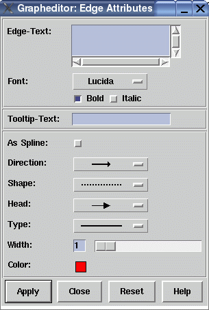

Manual
Edge Attributes Window
This graph editor dialog window is used to set the attributes of an edge in the graph. The dialog items in this window reflect the currently supported edge attributes in uDraw(Graph) (refer to the term representation for details about edge attributes). You can open this dialog with menu Edit/Edge/Attributes..., with the edge pop-up menu, with the graph editor icons or with a simple double-click on an edge when the graph editor is connected to the uDraw(Graph) API.
Dialog Elements of the Edge Attributes Window
-
Edge-Text
This field specifies the edge label which is displayed in grey behind the edge in the graph visualization. When you select the edge, the label is displayed with the edge color in the foreground. It is possible to use multi-line text by typing RETURN. -
Font
Here you can choose the font family and style used to draw the text of the edge. -
Tooltip-Text
This field specifies the text of an edge's tooltip. With activated tooltips in uDraw(Graph), this text will automatically appear in a small pop-up window (after a delay) as long as the mouse pointer is over the edge. Tooltips can be controlled in menu Options/General Settings. -
As Spline
With this option you can decide that the edge is visualized with a spline (i.e. curve) when it spans more than one level of nodes. If not set, straight line segments are used instead. These individual spline settings are only considered by uDraw(Graph) when the edge style is set to "As defined in Graph" in dialog Options/Layout Settings.... -
Direction
This is used to define the position of the edge's arrows. By default, each edge has an arrow pointing to the child node. With this menu it is possible to let the edge pointing to the parent node, to both the parent and the child node or to omit the arrows for the currently selected edge. Note that the arrows are only visual attributes of the edge and changing the direction does not manipulate the parent/child relationship in the graph. -
Shape
Here you can specify the pattern of the currently selected edge. An edge can be visualized with a solid (default), dotted or dashed line. -
Shape
Here you can specify the pattern of the currently selected edge. An edge can be visualized with a solid (default), dotted or dashed line. -
Head
Used to define the shape of arrow head. You will not see them when the "Direction" is set to a line with no arrows. There are four different kinds of arrow heads available. -
Type
To choose whether a single or double line should be used to visualize the selected edge. -
Width
With this slider you can define the thickness of the edge between 1 and 10 pixel. -
Color
Click on the colored field to get a palette of colors. Here you can specify the color of an edge by choosing it from the palette. To modify the palette, use the "Edit Color..." button in the palette to open the color editor. -
Apply
Push button to accept the current settings of this dialog window. The window remains open afterwards. Without pressing this button, modifications to these options are not considered. -
Close
Push button to close the edge attributes dialog window without performing any action. -
Reset
Push button to undo any modification to these options which were not confirmed using the "Apply" push button yet. So reset goes back to the current settings. -
Help
Push button to start the online help system with this page.
Copyright © 2005, Universität Bremen. All rights reserved.